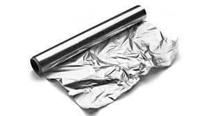
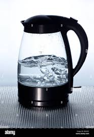
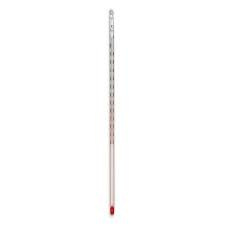
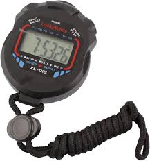

Insulation Experiment Report:




Method
- Prepare five cups (paper, plastic, glass, styrofoam, ceramic) and cover them with foil.
- Use a funnel to make a hole for pouring water and inserting a thermometer.
- Boil 100 ml of water using a kettle.
- Pour water into each cup, insert thermometers, and begin timing from 70°C.
- Record the time taken for each to cool to 39°C.